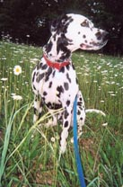
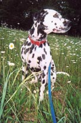

2009 Math Lab
 Right! The spots on a Dalmatian’s body are because of MATH!
Spots on a Dalmatian form after its been born. Its skin is the right size and shape so that spots form when it develops its patterning! No two Dalmatians have the same pattern formation; one reason for this is that each Dalmatian puppy is a different size and shape when spots develop.
How do Dalmatians get spots?
Imagine a race! At a certain time a flag is dropped and the people start running. Some people are slower at running than others. Well here, the slow runners are the melanin and the fast runners are the inhibitors! At a certain time skin cells start making melanin, which makes them colored. However, the same cells are making an inhibitor that is telling the surrounding skin cells NOT to make melanin, which means they are a natural color.
How many spots are on the Dalmatian above? Can you name any other animals that have spots?
 Right! The spots on a Dalmatian’s body are because of MATH!

|
| Dalmatian puppy photo: breederretriever.com |
Spots on a Dalmatian form after its been born. Its skin is the right size and shape so that spots form when it develops its patterning! No two Dalmatians have the same pattern formation; one reason for this is that each Dalmatian puppy is a different size and shape when spots develop.
How do Dalmatians get spots?
Imagine a race! At a certain time a flag is dropped and the people start running. Some people are slower at running than others. Well here, the slow runners are the melanin and the fast runners are the inhibitors! At a certain time skin cells start making melanin, which makes them colored. However, the same cells are making an inhibitor that is telling the surrounding skin cells NOT to make melanin, which means they are a natural color.
How many spots are on the Dalmatian above? Can you name any other animals that have spots?